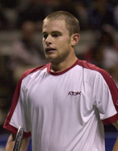
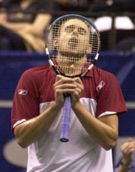
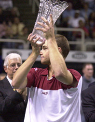
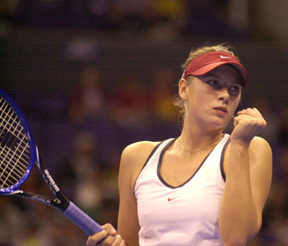
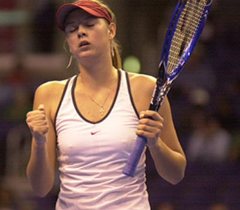

Previous: Marginal Gains - Top Shots and Set Up Shots | 🏠 Strategy Home | Next: Opening the Court - Part 1
Momentum: An Introduction to the 5 Stages
Comprehensive unified tennis knowledge base — Fundamentals, Stroke Analysis, Reference Library, and more
Momentum:An Introduction to the 5 Stages
By Alistair Higham
Why are tennis matches often so unpredictable? What makes them twist and turn in such surprising and unexpected ways?
In an international junior match, Julia raced out to a 6-1, 4-2 lead, hitting winners with ease, looking calm and in control. 25 minutes later, she had lost the second set and was down 1-5 in the third. Nothing was working and now it was her opponent who couldn’t miss.
Momentum: an invisible force that comes from the flow of energy between players.
But at 1-5 Julia saved three match points. At 2-5 she saved another. From that point, she won the next 5 games in a row and took the match 7-5 in the third.
On the surface her result might seem unusual or even miraculous, but any experienced observer of competitive tennis can recount many similar stories. Particularly in junior tennis, the swings and turnarounds are often astounding.
But the question is why and how do they occur? The answer lies in understanding momentum, and how it flows.
Momentum is the hidden force that controls the flow of tennis matches. It is invisible because it comes from the flow of energy between competitors. But you can sense momentum if you are competing or watching a match. You can feel things go for or against you, or for the players you are watching.
The outcome of most matches is a reflection of how the players dealt with momentum, rather than a reflection of the physical skills of the players. How did they react at the critical moments when momentum was in balance and ready to swing?
The reality is perfect tennis matches are extremely rare. Interviews reveal that even the best players in the world say they have played only a handful of matches when it felt as if everything was going their way for the entire match.



Images by J. Gregory Swendsen
In these articles you will learn to recognize momentum and respond to turningpoints to improve your results.
In the vast majority of matches, both players will encounter difficult situations, where things go against them. The real test of a player is how he deals with these situations.
Because it is invisible, most people don’t understand momentum and how it affects a match. The key question is: when does it change and why? What are the turning points in the momentum flow? How is it that some players always seem to manage to get momentum on their side when it matters most?
The Five Stages of Momentum
In the heat of battle, it may well seem that there is no real link between the flow of the match and the previous matches you have played. But when we look at tennis matches more closely, we see that the same things are happening again and again to most players.
In all kinds of different circumstances, comebacks are being made, leads are being lost, and close fought battles are taking place on tennis courts around the world involving young beginners, club hackers and professional players.
But five elements link all these circumstances together. These are the 5 Stages of Momentum. These five stages of momentum apply in all matches. But it is important to understand that the stages of momentum do not necessarily relate to the score on the scoreboard. This is why we so often see the unexpected reverses in matches described above.
The Five Stages of Momentum are:
When momentum is totally with you.
When momentum is with you.
When momentum is neutral.
When momentum is against you.
When momentum is totally against you.
The flow of momentum can move through these stages sometimes in a straight line, but also in a twisting line, which turns back on itself. Momentum can move from one stage to another very quickly if something significant happens, or slowly if nothing significant happens.



But it is important to understand that it is the nature of momentum to move. Momentum inevitably changes during most matches, especially if players are of a similar level. Given a bit of encouragement by either player, momentum will shift. If you understand this, you can learn to shift momentum in your favor.
The good news is that momentum is always in one of the five stages. If you learn how to react to each situation, you will be able to have a big say in which way it moves or even if it moves at all. Having this knowledge is like having a compass and a map that you can apply to any match and any situation, no matter how different they are.
The more difficult news is that when you have this map of momentum flow, you will need to have the right attitude and fighting spirit in order to control the direction you move.
These articles are about the flow of momentum and controlling it in each of the 5 Stages. They will explain why momentum fluctuates, how you can control it and how to make it work in your favor.
They cover the real problems that tennis players face such as:
How to hold on to a lead.
How to fight back from difficult or seemingly hopeless positions.
How to grasp opportunities that come your way.
In these articles, you will learn how and why momentum switches; how to respond to turning points. You will learn how to establish momentum, keep it with you, or regain it. You will understand why fighting spirit is the key and more importantly, when are the most effective times to use it. Managing momentum will help you bring together and control many of the variable factors that affect you during matches. By learning to understand and manage momentum you will develop the ability to raise your overall level of play and improve your match results on a consistent basis.

Alistair Higham is the National Manager of Coach Development for the LTA, the governing body for tennis in Great Britain. He is the author of Momentum: The Hidden Force in Tennis. Alistair is a former professional player who continues to compete successfully at the highest levels of English regional tennis. He has developed and coached dozens of top junior players, and traveled extensively on the international junior circuit, where he has had the unique opportunity to make a close study of the hidden force that dictates so much in the outcome of competitive tennis matches.

Momentum: The Hidden Force in Tennis Alistair Higham
Read this important new perspective on momentum and the development of the mental game, by top English coach Alistair Higham. Based on his observation of literally thousands of competitive matches as well as his own professional career, this book will give you the perspective and the tools to create momentum in your own matches and deal with the critical turning points that are the difference between winning and losing.
Click Here to Order!
Source: tennisplayer.net archive — Momentum - An Introduction to the 5 Stages.docx (John Yandell teaching library, 2002-2022). Extracted and rendered as HTML for Tennis Future Lab.